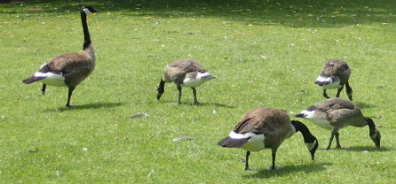

企業理念

奴雁たれ
福沢諭吉の言葉に「学者は国の奴雁なり」というものがあります。奴雁とは、仲間が餌を啄んでいるようなときでも、首を高くもたげて周りを観察し、有事に備えている雁のことです。この奴雁のように、常に世論の一歩先を見て、将来のために今何ができるのか考える、「学者」であり続けたい。そんな思いを胸に、奴雁社は本を作っています。
社長あいさつ
すべての人のための本を
1947年の創業以来、奴雁社は奴雁たれをモットーに、人の知識欲を満たす本づくりを行ってきました。
年齢、性別を問わず、すべての人の需要に答えるために、変化を恐れず成長していきたいと思っています。
…と、大層なことを申しましたが、本を読みながら無為な時間を過ごすこともまた、人生においてはかけがえのないひとときです。様々な面で人々の生活に彩りを添えられるよう、今後も尽力して参ります。
代表取締役社長
厳島 玲子
住所・アクセス
- 所在地
- 〒113-0011 帝京都半京区ポン郷1-3-3
tel: 03W-13334-4444 - アクセス
- 帝京メトロ角の内線「ポン郷三丁目」駅 徒歩３分
都営五田線 「水筒橋」駅 徒歩7分
JR総不線「水筒橋」駅 徒歩５分
都営バス 「ポン郷二丁目」バス停 徒歩2分